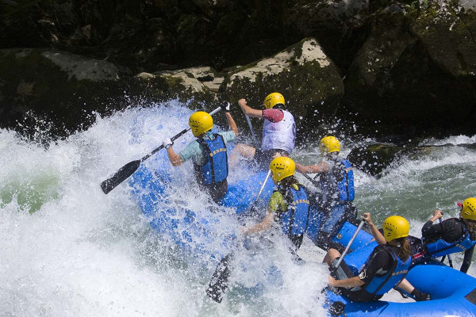

We have an array of exhilarating adventure trips that will awaken the Indiana Jones within you! From navigating treacherous rapids to exploring hidden caves and traversing rugged terrain, our adventures promise adrenaline-pumping excitement and unforgettable experiences.
Our trips
Los Dientes del Diablo

Brace yourself for an adrenaline-pumping journey through the treacherous waters of "The Devil's Teeth," as you conquer rapids and cascades in a daring white-water rafting expedition.
The Coral Bypass
Experience the thrill of white-water rafting as you plunge into the heart of "The Coral Bypass," where swirling currents and splashing water await daring adventurers seeking the ultimate aquatic thrill.
The Big Mattock

Set off on a high-octane journey aboard a striking white and red raft, tackling the challenging rapids of "The Big Mattock" river alongside your skilled team of rowers, in a quest for adventure and excitement.
| Name | Details | Action |
| Los Dientes del Diablo | Brace yourself for an adrenaline-pumping journey through the treacherous waters of "The Devil's Teeth," as you conquer rapids and cascades in a daring white-water rafting expedition. | |
| The Coral Bypass | Experience the thrill of white-water rafting as you plunge into the heart of "The Coral Bypass," where swirling currents and splashing water await daring adventurers seeking the ultimate aquatic thrill. | |
| The Big Mattock | Set off on a high-octane journey aboard a striking white and red raft, tackling the challenging rapids of "The Big Mattock" river alongside your skilled team of rowers, in a quest for adventure and excitement. | |
| Big Mallard | Prepare for an unforgettable adventure as you navigate your raft through a narrow pass, where the rushing waters of the Big Mallard river provide both excitement and breathtaking scenery. | |
| Half Day Adventure | Embark on an exhilarating half-day journey aboard a vibrant red raft, as you paddle through challenging rapids with your fellow rafters, making memories that last a lifetime. |